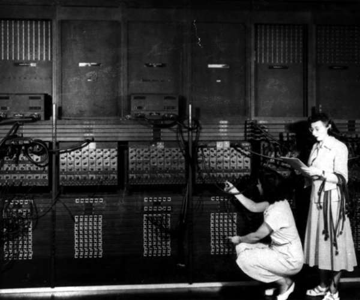

#423567 Aula Projeto Integrador
O Computador e Integrador Numérico Eletrônico (Electronic Numeral Integrator and Computer - ENIAC) foi o primeiro computador digital do mundo, mas em nada se parecia com os computadores que conhecemos hoje.
Pesava cerca de 30 toneladas e ocupava um espaço de 150 m2 e, apesar do tamanho, tinha memória de apenas 200 bits.
Foi desenvolvido durante a Segunda Guerra Mundial (1939-1945) e começou a operar em 1947. Foi criado por John William Mauchly (1907-1980) e John Presper Eckert (1919-1995).
Foi encomendado e usado pelo exército americano para processar dados sobre pesquisas táticas. Funcionava com um sistema manual de perfuração de cartões e tinha capacidade de fazer até 5000 operações por segundo e esteve em atividade por dez anos.

" https://www.significados.com.br/informatica/#:~:text=A%20hist%C3%B3ria%20da%20inform%C3%A1tica%20come%C3%A7a,que%20pudesse%20fazer%20c%C3%A1lculos%20rapidamente. "